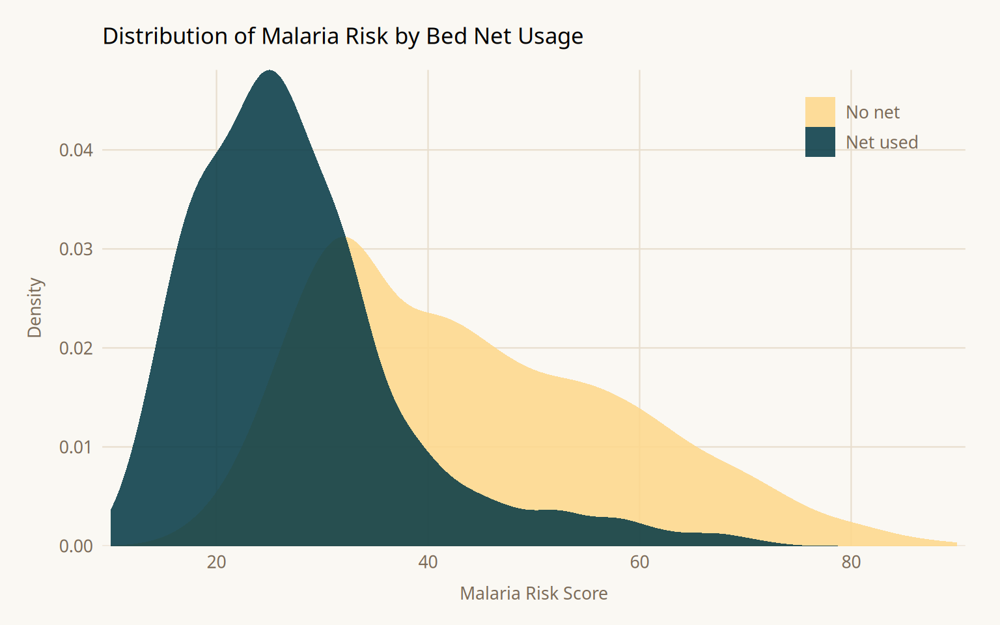
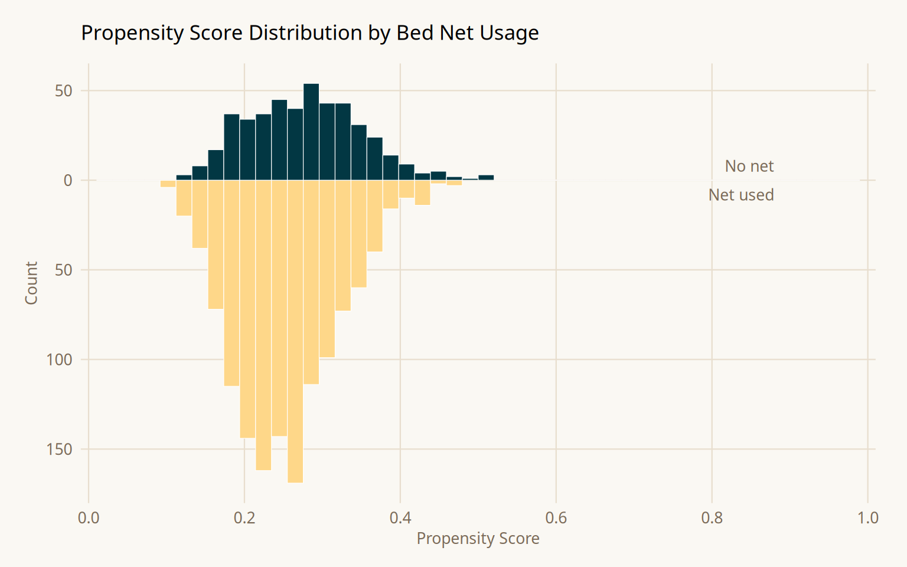
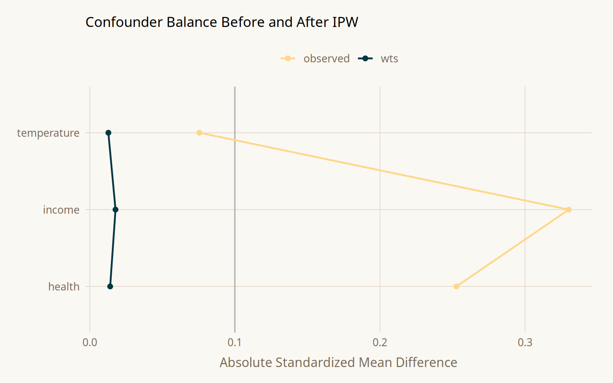
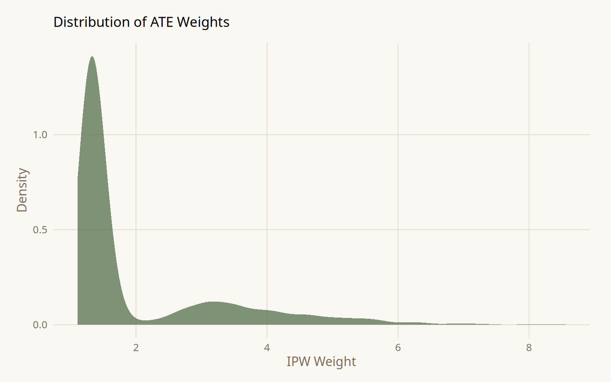
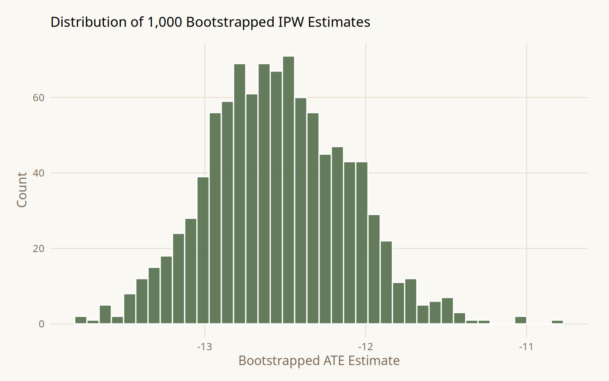
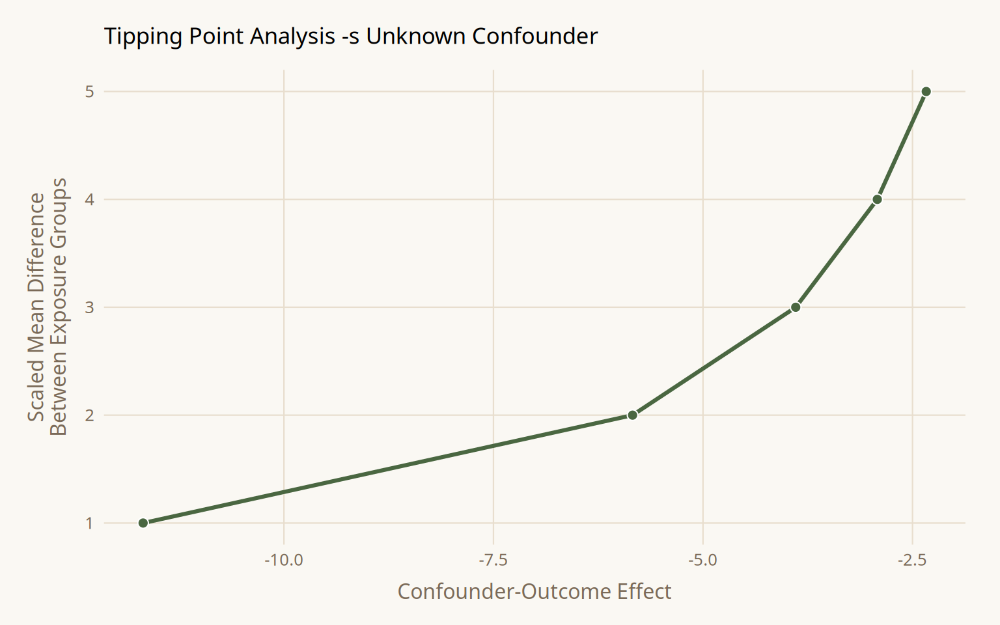

| Term | Definition |
|---|---|
| Target Trial | The hypothetical randomized trial one would run to answer the causal question. Clarifies exposure, outcome, population, and time frame before analysis begins. |
| Causal Directed Acyclic Graph (DAG) | A directed acyclic graph encoding assumed causal relationships between variables. Constructed from domain knowledge, not data. Used to identify which variables must be adjusted for. |
| Open Pathway | A causal pathway between exposure and outcome that has not been blocked by conditioning. Open confounding pathways bias naive estimates. |
| Minimal Adjustment Set | The smallest set of variables that, when conditioned on, blocks all confounding pathways in the DAG. For this example: income, health, temperature. |
| Propensity Score | The predicted probability of receiving the observed treatment, modeled using the minimal adjustment set. Used to construct IPW weights. |
| Inverse Probability Weighting (IPW) | A weighting technique that uses propensity scores to reweight observations, creating a pseudo-population where confounders are balanced across exposure groups. |
| Average Treatment Effect (ATE) | The expected difference in outcomes if the entire population received treatment versus if no one did. Answers a population-level what-if question. |
| Pseudo-population | The reweighted dataset produced by IPW in which the arrows between confounders and exposure are effectively removed. |
| Standardized Mean Difference (SMD) | A standardized metric of confounder imbalance between exposure groups. Values below 0.1 are conventionally considered acceptable balance. |
| Tipping Point Analysis | A sensitivity analysis calculating the strength an unmeasured confounder would need to shift the effect estimate to the null. |
The Whole Game: Mosquito Nets and Malaria
Overview
A complete causal analysis follows six steps: specify a causal question, draw assumptions via a DAG, model those assumptions, diagnose the models, estimate the causal effect, and conduct sensitivity analysis. Applied to simulated observational data (net_data, n = 1,752 households), this chapter estimates the causal impact of insecticide-treated bed net use on malaria risk using propensity score weighting. The worked example deliberately includes an unmeasured confounder, genetic malaria resistance to demonstrate that even a well-executed analysis can produce a wrong answer, and that sensitivity analysis is not optional.
Core Concepts
The Dataset
net_data from {causalworkshop}. Simulated, n = 1,752 households. Because the data are simulated, the true causal effect is known: bed net use reduces malaria risk by -10 points.
| Variable | Type | Description |
|---|---|---|
| net / net_num | Binary (logical) | Whether the household used an insecticide-treated bed net |
| malaria_risk | Continuous 0-100 | Outcome - estimated probability of contracting malaria |
| income | Continuous ($/week) | Weekly household income in dollars |
| health | Continuous 0-100 | Individual health score |
| household | Integer | Number of people in the household |
| eligible | Binary | Whether the household qualifies for the free net program |
| temperature | Continuous (C) | Average nightly temperature |
| resistance | Continuous 0-100 | Local mosquito insecticide resistance level |
Methods / Estimators
| Method | Objective | Detail |
|---|---|---|
| Naive Linear Regression | Baseline unadjusted estimate | Recovers naive difference of -16.4; biased because 7 confounding paths remain open |
| Logistic Regression (Propensity Model) | Estimate propensity scores from minimal adjustment set | Formula: net ~ income + health + temperature; minimal adjustment set only |
| Inverse Probability Weighting (ATE) | Balance confounders across exposure groups | Weight = 1 / P(observed treatment | X); up-weights atypical observations |
| Mirrored Histogram | Visualize propensity score overlap between groups | geom_mirror_histogram() from {halfmoon}; shows weighted vs. unweighted overlap |
| Love Plot (SMD) | Quantify confounder balance before and after weighting | tidy_smd() + geom_love(); SMD < 0.1 target; all three confounders pass after weighting |
| Bootstrap (full pipeline) | Compute valid confidence intervals for weighted estimator | Re-estimates propensity model and weights inside each resample; naive SEs are too narrow |
| Tipping Point Analysis | Bound the strength of unknown unmeasured confounding | tip_coef() against boot_estimate$.upper; maps confounder strength needed to null the CI |
| Binary Confounder Adjustment | Adjust estimate for a partially characterized unmeasured confounder | adjust_coef_with_binary(); requires prevalence in exposed/unexposed and outcome effect size |
Assumptions
| Category | Key Assumptions |
|---|---|
| Correct DAG Specification | The proposed DAG correctly encodes all causal relationships. The minimal adjustment set {income, health, temperature} is only correct if the DAG is correct. This chapter shows a case where it is not, genetic resistance is missing. |
| No Unmeasured Confounding | All variables on open confounding pathways have been measured and correctly included. IPW cannot adjust for what was not measured. |
| Correct Propensity Model Form | The logistic regression for propensity scores correctly models the relationship between confounders and exposure, including any nonlinearity or interactions. |
| Positivity | Every unit has a non-zero probability of receiving either treatment level. Extreme weights signal positivity violations and can destabilize estimates. |
| Bootstrap Procedure | The entire pipeline, propensity model, weight calculation, outcome model, must be replicated within each bootstrap resample. Bootstrapping only the outcome model produces intervals that are too narrow. |
Workflow Implementation
Step 1: Naive Exploration
Before any causal adjustment, it helps to understand the raw distribution of the outcome by exposure group. This gives a sense of the magnitude of the observed association, which will differ from the causal effect once confounding is addressed.
Show code
librarian::shelf(causalworkshop, tidyverse, broom, paletteer)
net_data %>%
ggplot(aes(malaria_risk, fill = net)) +
geom_density(color = NA, alpha = 0.85, linewidth = 0) +
scale_fill_paletteer_d(
"nationalparkcolors::Acadia",
labels = c("FALSE" = "No net", "TRUE" = "Net used")
) +
scale_x_continuous(breaks = seq(0, 100, 20), expand = c(0.01, 0)) +
scale_y_continuous(expand = c(0, 0)) +
labs(
x = "Malaria Risk Score", y = "Density", fill = NULL,
title = "Distribution of Malaria Risk by Bed Net Usage"
) +
theme_minimal(base_family = "Source Sans 3", base_size = 12) +
theme(
plot.title = element_text(family = "Source Serif 4", size = 13,
margin = margin(b = 12)),
axis.text = element_text(color = "#7a6a58", size = 10),
axis.title = element_text(color = "#7a6a58", size = 10),
axis.title.x = element_text(margin = margin(t = 8)),
axis.title.y = element_text(margin = margin(r = 8)),
legend.position = c(0.88, 0.88),
legend.text = element_text(color = "#7a6a58", size = 10),
panel.grid.major = element_line(color = "#e8dece", linewidth = 0.4),
panel.grid.minor = element_blank(),
plot.background = element_rect(fill = "#faf8f3", color = NA),
panel.background = element_rect(fill = "#faf8f3", color = NA),
plot.margin = margin(16, 20, 12, 16)
)
Show code
net_data %>%
group_by(net) %>%
summarise(malaria_risk = mean(malaria_risk))# A tibble: 2 × 2
net malaria_risk
<lgl> <dbl>
1 FALSE 43.9
2 TRUE 27.5Show code
net_data %>%
lm(malaria_risk ~ net, data = .) %>%
tidy()# A tibble: 2 × 5
term estimate std.error statistic p.value
<chr> <dbl> <dbl> <dbl> <dbl>
1 (Intercept) 43.9 0.377 116. 0
2 netTRUE -16.4 0.741 -22.1 1.10e-95The naive difference in means is -16.4; net users have substantially lower malaria risk. This is not the causal effect. It is a composite of the true effect and all open confounding pathways. Income, health, and temperature simultaneously influence both whether someone uses a net and their malaria risk, inflating the apparent protective effect.
Steps 2 & 3: Draw the DAG and Model Assumptions
What is a propensity score?
A propensity score is the predicted probability that a unit received the treatment it actually received, given observed covariates: \(e(X) = P(A = 1 \mid X)\). It summarizes all covariate information relevant to treatment assignment into a single number. Among units with the same propensity score, treatment assignment is approximately random, so comparing outcomes within propensity score strata removes confounding due to \(X\).
The propensity model uses only the minimal adjustment set identified from the DAG. Including variables outside this set particularly colliders or pure instruments, can introduce new bias rather than reduce it.
What is IPW and the ATE?
IPW reweights each observation by the inverse of the probability of receiving the treatment it actually received:
\[w_i = \frac{1}{P(A_i = 1 \mid X_i)} \quad \text{if treated}, \qquad w_i = \frac{1}{1 - P(A_i = 1 \mid X_i)} \quad \text{if untreated}\]
Observations unlikely to receive their actual treatment get upweighted, they are rare and therefore informative. This creates a pseudo-population where confounders are balanced across exposure groups, as if treatment had been randomly assigned.
The ATE is the estimand this pseudo-population targets: the expected difference in outcomes if the entire population had used nets versus if no one had. This is a population-level what-if question.
Show code
librarian::shelf(tidymodels, propensity)
net_data_f <- net_data %>%
mutate(net = as.factor(net))
propensity_model <- logistic_reg() %>%
set_engine("glm") %>%
fit(net ~ income + health + temperature, data = net_data_f)
propensity_model %>%
predict(net_data_f, type = "prob") %>%
head()# A tibble: 6 × 2
.pred_FALSE .pred_TRUE
<dbl> <dbl>
1 0.754 0.246
2 0.782 0.218
3 0.677 0.323
4 0.769 0.231
5 0.721 0.279
6 0.694 0.306Show code
net_data_wts <- net_data_f %>%
bind_cols(
propensity_model %>%
predict(net_data_f, type = "prob") %>%
rename(.fitted = .pred_TRUE)
) %>%
mutate(wts = wt_ate(.fitted, net))
net_data_wts %>%
select(net, .fitted, wts) %>%
head()# A tibble: 6 × 3
net .fitted wts
<fct> <dbl> <psw{ate}>
1 FALSE 0.246 1.327032
2 FALSE 0.218 1.278524
3 FALSE 0.323 1.477133
4 FALSE 0.231 1.299890
5 FALSE 0.279 1.386778
6 FALSE 0.306 1.441023Step 4: Diagnose Models (Assessing Balance)
Why do we need love plots?
Fitting a propensity model and assuming it worked is not sufficient. Balance must be verified empirically. Two diagnostics are used together:
Mirrored histograms show the propensity score distribution for each group. The distributions should overlap substantially. If one group is concentrated at extreme propensity scores, there is a positivity problem, observations in one group have no comparable counterparts, and IPW estimates will be unstable.
Love plots (SMD plots) show the standardized mean difference for each confounder before and after weighting. An SMD below 0.1 is the conventional threshold. Confounders that start above 0.1 and drop below after weighting confirm the propensity model is achieving balance.
Show code
librarian::shelf(halfmoon, paletteer)
ggplot(net_data_wts, aes(.fitted)) +
geom_mirror_histogram(
aes(fill = net),
bins = 50, color = "white", linewidth = 0.2
) +
scale_fill_paletteer_d("nationalparkcolors::Acadia") +
scale_y_continuous(labels = abs, expand = c(0.05, 0)) +
scale_x_continuous(
breaks = seq(0, 1, 0.2),
limits = c(0, 1),
expand = c(0.01, 0)
) +
annotate("text", x = 0.88, y = 8, label = "No net",
color = "#7a6a58", size = 3.5, hjust = 1, family = "Source Sans 3") +
annotate("text", x = 0.88, y = -8, label = "Net used",
color = "#7a6a58", size = 3.5, hjust = 1, family = "Source Sans 3") +
labs(
x = "Propensity Score", y = "Count",
title = "Propensity Score Distribution by Bed Net Usage"
) +
theme_minimal(base_family = "Source Sans 3", base_size = 12) +
theme(
plot.title = element_text(family = "Source Serif 4", size = 13,
margin = margin(b = 12)),
axis.text = element_text(color = "#7a6a58", size = 10),
axis.title = element_text(color = "#7a6a58", size = 10),
legend.position = "none",
panel.grid.major = element_line(color = "#e8dece", linewidth = 0.4),
panel.grid.minor = element_blank(),
plot.background = element_rect(fill = "#faf8f3", color = NA),
panel.background = element_rect(fill = "#faf8f3", color = NA),
plot.margin = margin(16, 20, 12, 16),
clip = "off"
)
Show code
plot_df <- tidy_smd(
net_data_wts,
c(income, health, temperature),
.group = net,
.wts = wts
)
ggplot(plot_df, aes(x = abs(smd), y = variable, group = method, color = method)) +
geom_love() +
scale_color_paletteer_d("nationalparkcolors::Acadia") +
labs(
x = "Absolute Standardized Mean Difference",
y = NULL, color = NULL,
title = "Confounder Balance Before and After IPW"
) +
theme_minimal(base_family = "Source Sans 3", base_size = 12) +
theme(
plot.title = element_text(family = "Source Serif 4", size = 13,
margin = margin(b = 12)),
axis.text = element_text(color = "#7a6a58", size = 10),
axis.title.x = element_text(color = "#7a6a58", margin = margin(t = 8)),
legend.position = "top",
legend.text = element_text(color = "#7a6a58", size = 10),
panel.grid.major = element_line(color = "#e8dece", linewidth = 0.4),
panel.grid.minor = element_blank(),
plot.background = element_rect(fill = "#faf8f3", color = NA),
panel.background = element_rect(fill = "#faf8f3", color = NA),
plot.margin = margin(16, 20, 12, 16)
)
Show code
net_data_wts %>%
ggplot(aes(as.numeric(wts))) +
geom_density(fill = "#4a6741", color = NA, alpha = 0.7) +
labs(
x = "IPW Weight", y = "Density",
title = "Distribution of ATE Weights"
) +
theme_minimal(base_family = "Source Sans 3", base_size = 12) +
theme(
plot.title = element_text(family = "Source Serif 4", size = 13,
margin = margin(b = 12)),
axis.text = element_text(color = "#7a6a58"),
axis.title = element_text(color = "#7a6a58"),
panel.grid.major = element_line(color = "#e8dece", linewidth = 0.4),
panel.grid.minor = element_blank(),
plot.background = element_rect(fill = "#faf8f3", color = NA),
panel.background = element_rect(fill = "#faf8f3", color = NA),
plot.margin = margin(16, 20, 12, 16)
)
After weighting, all three confounders fall below SMD = 0.1. The weight distribution is skewed but contains no extreme values requiring trimming or stabilization.
Step 5: Estimate the Causal Effect
Why bootstrap instead of model standard errors?
When a weighted outcome model is fit with lm(..., weights = wts), the standard errors treat the weights as fixed known constants. They are not the weights were estimated from a logistic regression model, and that estimation introduces its own uncertainty. Ignoring this produces standard errors that are too narrow, meaning 95% confidence intervals fall short of 95% coverage.
The correct approach bootstraps the entire pipeline: for each resample, refit the propensity model, recompute the weights, then refit the outcome model. A function that only reruns the outcome model on fixed weights propagates none of the weight estimation uncertainty and produces the same incorrectly narrow intervals as the naive model SE.
Show code
librarian::shelf(rsample, broom)
fit_ipw <- function(.split, ...) {
.df <- as.data.frame(.split) %>%
mutate(net = as.factor(net))
propensity_model <- logistic_reg() %>%
set_engine("glm") %>%
fit(net ~ income + health + temperature, data = .df)
.df <- .df %>%
bind_cols(
propensity_model %>%
predict(.df, type = "prob") %>%
rename(.fitted = .pred_TRUE)
) %>%
mutate(wts = wt_ate(.fitted, net))
lm(malaria_risk ~ net, data = .df, weights = as.numeric(wts)) %>%
tidy()
}
bootstrapped_net_data <- bootstraps(net_data, times = 1000, apparent = TRUE)
ipw_results <- bootstrapped_net_data %>%
mutate(boot_fits = map(splits, fit_ipw))
ipw_results %>%
filter(id != "Apparent") %>%
mutate(
estimate = map_dbl(
boot_fits,
~ .x %>% filter(term == "netTRUE") %>% pull(estimate)
)
) %>%
ggplot(aes(estimate)) +
geom_histogram(fill = "#4a6741", color = "white", alpha = 0.85, bins = 40) +
labs(
x = "Bootstrapped ATE Estimate", y = "Count",
title = "Distribution of 1,000 Bootstrapped IPW Estimates"
) +
theme_minimal(base_family = "Source Sans 3", base_size = 12) +
theme(
plot.title = element_text(family = "Source Serif 4", size = 13,
margin = margin(b = 12)),
axis.text = element_text(color = "#7a6a58"),
axis.title = element_text(color = "#7a6a58"),
panel.grid.major = element_line(color = "#e8dece", linewidth = 0.4),
panel.grid.minor = element_blank(),
plot.background = element_rect(fill = "#faf8f3", color = NA),
panel.background = element_rect(fill = "#faf8f3", color = NA),
plot.margin = margin(16, 20, 12, 16)
)
Show code
boot_estimate <- ipw_results %>%
int_t(boot_fits) %>%
filter(term == "netTRUE")
boot_estimate# A tibble: 1 × 6
term .lower .estimate .upper .alpha .method
<chr> <dbl> <dbl> <dbl> <dbl> <chr>
1 netTRUE -13.4 -12.5 -11.7 0.05 student-tResult: ATE = -12.6 (95% CI -13.4, -11.7). Confounder-adjusted with correct bootstrap standard errors. Still wrong, the true effect is -10. The gap is explained in Step 6.
Step 6: Sensitivity Analysis
The estimate of -12.6 is biased because the DAG was misspecified. Genetic resistance to malaria was not included. Some ethnic groups carry genetic resistance and historically have higher net adoption rates, making resistance a confounder of the net-to-malaria relationship. Sensitivity analysis quantifies how wrong the analysis could be without requiring the unmeasured variable.
Tipping Point - Unknown Confounder
Show code
librarian::shelf(tipr)
tipping_points <- tip_coef(boot_estimate$.upper, exposure_confounder_effect = 1:5)
tipping_points %>%
ggplot(aes(confounder_outcome_effect, exposure_confounder_effect)) +
geom_line(color = "#4a6741", linewidth = 1.1) +
geom_point(fill = "#4a6741", color = "white", size = 2.5, shape = 21) +
labs(
x = "Confounder-Outcome Effect",
y = "Scaled Mean Difference\nBetween Exposure Groups",
title = "Tipping Point Analysis -s Unknown Confounder"
) +
theme_minimal(base_family = "Source Sans 3", base_size = 12) +
theme(
plot.title = element_text(family = "Source Serif 4", size = 13,
margin = margin(b = 12)),
axis.text = element_text(color = "#7a6a58"),
axis.title = element_text(color = "#7a6a58"),
axis.title.y = element_text(margin = margin(r = 8)),
axis.title.x = element_text(margin = margin(t = 8)),
panel.grid.major = element_line(color = "#e8dece", linewidth = 0.4),
panel.grid.minor = element_blank(),
plot.background = element_rect(fill = "#faf8f3", color = NA),
panel.background = element_rect(fill = "#faf8f3", color = NA),
plot.margin = margin(16, 20, 12, 16)
)
At a scaled mean difference of 1 between exposure groups, the confounder would need to reduce malaria risk by -11.7 to null the upper CI. At a scaled difference of 5, only -2.3 is required. Whether these thresholds are plausible is a domain knowledge question.
Adjustment for a Known Unmeasured Confounder
From the literature on genetic malaria resistance in the simulated population: resistance reduces malaria risk by approximately -10, prevalence among net users is ~26%, and prevalence among non-net users is ~5%.
Show code
adjusted_estimates <- boot_estimate %>%
select(.estimate, .lower, .upper) %>%
unlist() %>%
adjust_coef_with_binary(
exposed_confounder_prev = 0.26,
unexposed_confounder_prev = 0.05,
confounder_outcome_effect = -10
)
adjusted_estimates# A tibble: 3 × 4
effect_adjusted effect_observed exposure_confounder_e…¹ confounder_outcome_e…²
<dbl> <dbl> <dbl> <dbl>
1 -10.4 -12.5 0.21 -10
2 -11.3 -13.4 0.21 -10
3 -9.58 -11.7 0.21 -10
# ℹ abbreviated names: ¹exposure_confounder_effect, ²confounder_outcome_effectAdjusted estimate: -10.5 (95% CI -11.3, -9.6). The true simulated effect is -10. The unadjusted IPW estimate of -12.6 was biased upward in magnitude by the unmeasured genetic resistance confounder.
Key Takeaways
- The raw difference in means (-16.4) and the IPW-adjusted estimate (-12.6) are both wrong. The true effect is -10. A correctly executed propensity score analysis still fails when the DAG is misspecified.
- Propensity scores summarize all confounder information into a single scalar. Conditioning on the propensity score achieves approximate random assignment conditional on the assumed DAG being correct.
- IPW standard errors from
lm()treat weights as fixed. The full propensity model must be re-estimated inside every bootstrap resample for correct interval coverage. - SMD < 0.1 after weighting is necessary but not sufficient. It confirms balance on observed confounders and says nothing about unmeasured ones.
- Sensitivity analysis is not a post-hoc check. It characterizes the boundary conditions under which the conclusion changes and forces an explicit assessment of whether those conditions are plausible.
- The six-step framework is a discipline for making assumptions transparent and testable, not a guarantee of a correct answer.